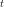
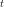
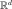
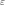

ARMA stochastic process¶
 , where is the
random variable at time . Under some general
conditions,
, where is the
random variable at time . Under some general
conditions, can be modeled by an
can be modeled by an  model
defined at the time stamp by:
model
defined at the time stamp by:(1)¶
where the coefficients of the recurrence are matrix in
 and is white noise
discretized on the same time grid as the process .
The coefficients form the Auto Regressive (AR) part of the model, while the coefficients the Moving Average (MA) part.
We introduce the homogeneous system associated to (1):
(2)¶
To get stationary solutions of (1), it is necessary to get its characteristic polynomial defined in (3):
(3)¶
Thus the solutions of (2) are of the form
where the are the roots of
the polynomials defined in (3) and
 is a polynomials of degree the order of the root
:
is a polynomials of degree the order of the root
:
The processes decrease with time if and only if the modulus of all the components of the roots are less than 1:
(4)¶![\forall i,j \in [1,d], \, |r_{ij}| <1](../../_images/math/95ca943222694f129345e386428807c9bfed98a1.svg)
Once given the coefficients of the model , we
evaluate the roots of the polynomials and checks
the previous condition (4). The roots , are the
eigenvalues of the matrix  which writes in dimension
as:
which writes in dimension
as:
(5)¶
and in dimension 1:
(6)¶
The matrix is known to be the companion matrix.
It is important to note that:
- when asking for a realization of the stationary process modeled by
, one has to obtain a realization that does not
depend on the current state of the process;
- whereas, when one asks for a possible future extending a particular current state of the process, the realization of the model must depend on that current sate.
How to proceed to respect these constraints?
If we note and
two distinct solutions of (1)
associated to two distinct initial states, then, the process
is solution of the homogeneous equation associated to (1) and
then decreases with time under the condition (4). Let us note
 the number such that:
the number such that:
(7)¶
where the are the roots of the polynomials (3) and
 is the precision of the computer (
 ). Then, after
instants, the process has
disappeared, which means that the processes
and do not
differ any more. As a conclusion, after instants, the
realization of the ARMA process does not depend any more on the
initial state.
). Then, after
instants, the process has
disappeared, which means that the processes
and do not
differ any more. As a conclusion, after instants, the
realization of the ARMA process does not depend any more on the
initial state.
That is why, when making a realization of the ARMA model, we perform
a thermalization step that simply consists in realizing the
model upon additional instants, erasing the
first values and finally only retaining the other
ones. That step ensures that the realization of the process does not
depend on the initial state.
By default, the number is evaluated according to
(7) by the method computeNThermalization. The User could get
access to it with the method getNThermalization and can change the
value with the method setNThermalization. (In order to give back to
its default value, it is necessary to re-use the
method computeNThermalization).
On the contrary, in the context of getting a possible future from a
specified current state, the User should care that the number of
additional instants  on which he wants to extend the
process, is such that
on which he wants to extend the
process, is such that  because beyond
, the future has no link with the present.
More precisely, after instants, such that:
because beyond
, the future has no link with the present.
More precisely, after instants, such that:
(8)¶
where the are the components of the covariance matrix of the white noise , the influence of the initial state is of same order than the influence of the white noise.
Let us note that when the ARMA model is created without specifying the current state, we automatically proceed to a thermalization step at the creation of the ARMA object.
Before asking for the generation of a possible future, the user has to specify the current state of the ARMA model, thanks to the creation method that takes into account the current state. In that case, we do not proceed to the thermalization step.
As an ARMA model is a stochastic process, the object ARMA inherits the methods of the Process object. Thus, it is possible to get its marginal processes, its time grid, its dimension and to get several realizations at a time of the process.
API:
- See
ARMA - See
ARMACoefficients - See
ARMAState - See
ARMALikelihoodFactory
Examples: